Fundamentos para representar funciones
En esta sección realizaremos gráficas que representan funciones, ideales para mostrar conceptos fundamentales, como el comportamiento de éstas, sus límites o sus valores críticos. También exploraremos opciones básicas, como agregar cuadrículas (mallas) o aplicar escalas logarítmicas, para que las gráficas sean más informativas y fáciles de interpretar.
Dónde colocar el código
Enseguida mostraremos el código necesario para generar una serie de Maxigráficas en STACK. Para que las gráficas aparezcan en el cuerpo del reactivo es necesario insertar el código en Enunciado de la pregunta:
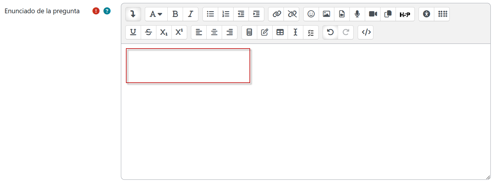
Por ahora nos concentraremos solamente en la elaboración de las gráficas y en su visualización. Más adelante exploraremos cómo crear preguntas de distintos tipos que involucren la inserción de gráficas, ya sea en el enunciado, en las opciones de respuesta o en la retroalimentación adaptativa. Cuando se requiera capturar código adicional en el campo Variables de respuesta, se indicará así con una toma de pantalla.
Ejemplos
- Gráfica básica con ajuste en el rango de valores para \(x\).
{@plot(x^2,[x,-2,2])@}
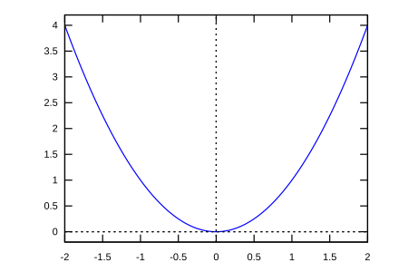
- Gráficas múltiples con ajuste en el rango de valores para \(x\) y para \(y\).
{@plot([x^3,exp(x)],[x,-2,2],[y,-4,4])@}
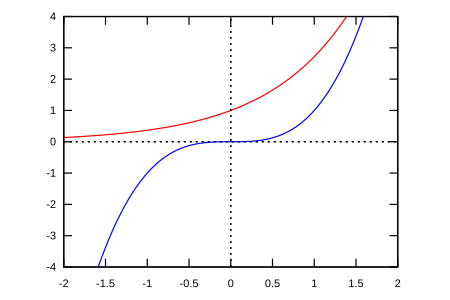
- Gráficas con malla.
{@plot([x^2/(1+x^2),2*x/(1+x^2)^2], [x, -2, 2], [y,-2.1,2.1], grid2d)@}
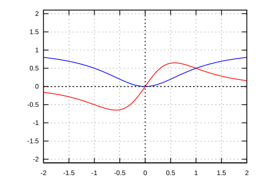
- Gráficas sin malla.
{@plot([x^2/(1+x^2),2*x/(1+x^2)^2], [x, -2, 2], [y,-2.1,2.1])@}
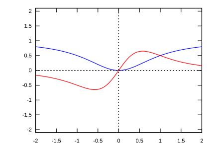
- Gráfica con escala logarítmica para el eje \(y\), con color rojo.
{@plot(exp(3*s),[s, -2, 2],[logy], [color,red])@}
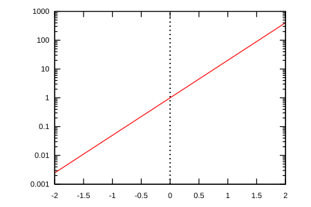
- Gráfica a trozos.
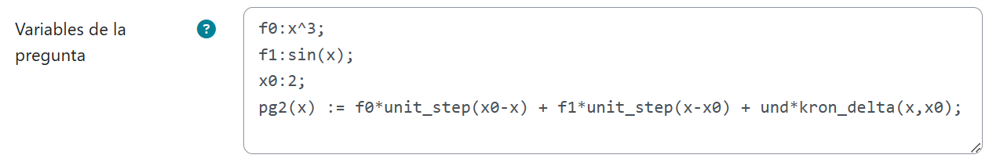
{@plot(pg2(x), [x,(x0-5),(x0+5)], [y,-10,10], [legend,false])@}
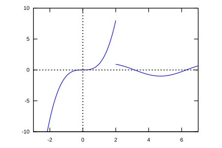
- Gráfica de función discontinua.
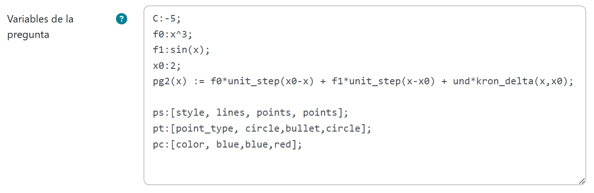
{@plot([pg2(x), [discrete,[[x0,C]]], [discrete,[[x0,limit(pg2(x),x,x0,'minus)],[x0,limit(pg2(x),x,x0,'plus)]]]], [x,(x0-5),(x0+5)], [y,-10,10], ps, pt, pc, [legend,false])@}
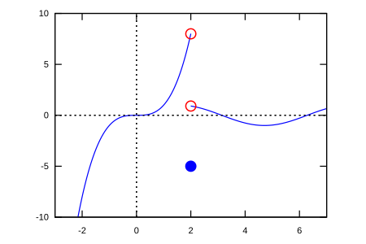
- Gráfica de función implícita.
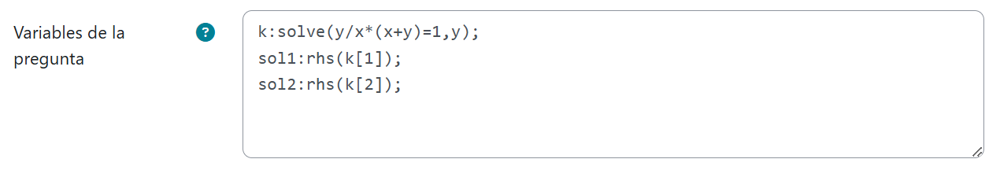
{@plot([sol1,sol2],[x,-8,8],[legend,true])@}
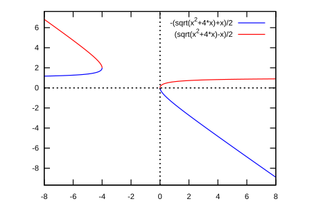